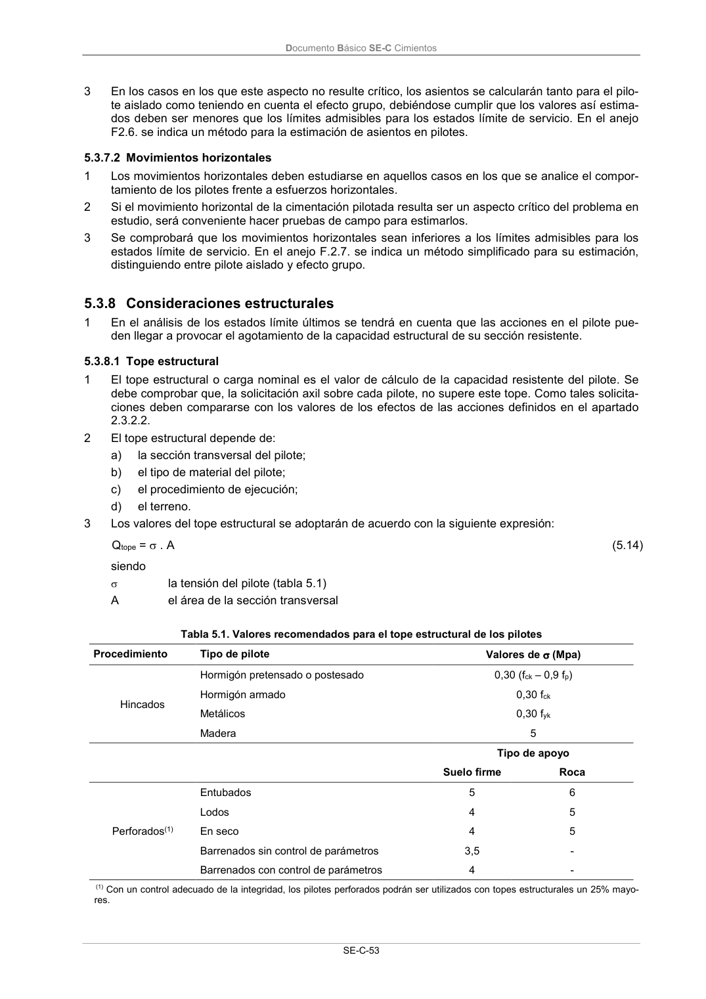

DB-SE-C Cimientos · edición 2019-12-20 · capa oficial
Documento DB-SE-C-oficial · SHA-256 del PDF a71133f4b0dca253e45ea3071c70f2a512354bcc5cd841bf89b1a502f567ac5e
Página física 58 de 165.
Copia fiel del PDF fuente · Fuente oficial
Ficha de la disposición en la fuente oficial
Formato: Texto de la página (Markdown)
Documento Básico SE-C Cimientos SE-C-53 3 En los casos en los que este aspecto no resulte crítico, los asientos se calcularán tanto para el pilo- te aislado como teniendo en cuenta el efecto grupo, debiéndose cumplir que los valores así estima- dos deben ser menores que los límites admisibles para los estados límite de servicio. En el anejo F2.6. se indica un método para la estimación de asientos en pilotes. 5.3.7.2 Movimientos horizontales 1 Los movimientos horizontales deben estudiarse en aquellos casos en los que se analice el compor- tamiento de los pilotes frente a esfuerzos horizontales. 2 Si el movimiento horizontal de la cimentación pilotada resulta ser un aspecto crítico del problema en estudio, será conveniente hacer pruebas de campo para estimarlos. 3 Se comprobará que los movimientos horizontales sean inferiores a los límites admisibles para los estados límite de servicio. En el anejo F.2.7. se indica un método simplificado para su estimación, distinguiendo entre pilote aislado y efecto grupo. 5.3.8 Consideraciones estructurales 1 En el análisis de los estados límite últimos se tendrá en cuenta que las acciones en el pilote pue- den llegar a provocar el agotamiento de la capacidad estructural de su sección resistente. 5.3.8.1 Tope estructural 1 El tope estructural o carga nominal es el valor de cálculo de la capacidad resistente del pilote. Se debe comprobar que, la solicitación axil sobre cada pilote, no supere este tope. Como tales solicita- ciones deben compararse con los valores de los efectos de las acciones definidos en el apartado 2.3.2.2. 2 El tope estructural depende de: a) la sección transversal del pilote; b) el tipo de material del pilote; c) el procedimiento de ejecución; d) el terreno. 3 Los valores del tope estructural se adoptarán de acuerdo con la siguiente expresión: Qtope = . A (5.14) siendo la tensión del pilote (tabla 5.1) A el área de la sección transversal Tabla 5.1. Valores recomendados para el tope estructural de los pilotes Procedimiento Tipo de pilote Valores de (Mpa) Hincados Hormigón pretensado o postesado 0,30 (fck – 0,9 fp) Hormigón armado 0,30 fck Metálicos 0,30 fyk Madera 5 Tipo de apoyo Suelo firme Roca Perforados(1) Entubados 5 6 Lodos 4 5 En seco 4 5 Barrenados sin control de parámetros 3,5 - Barrenados con control de parámetros 4 - (1) Con un control adecuado de la integridad, los pilotes perforados podrán ser utilizados con topes estructurales un 25% mayo- res.
